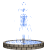

Juan 7:38
Aquí está nuestra colección de Doctrina Bíblica para la misión de San Pedro Sula, las hemos compuesto en español, si desea leer estas y otras lecciones en inglés, haga clic aquí. Si tiene alguna pregunta o desea comunicarse con el hermano Blanchard, por favor envíe un correo electrónico aquí. Dios te bendiga, mientras estudias su palabra con un corazón sincero.